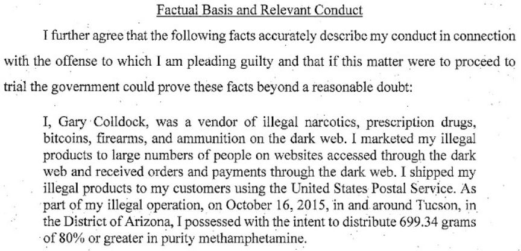
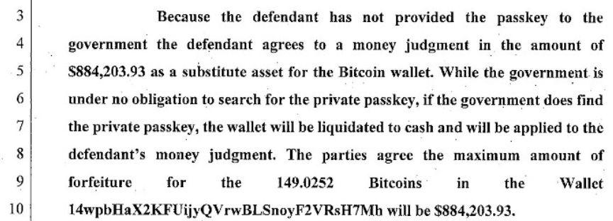
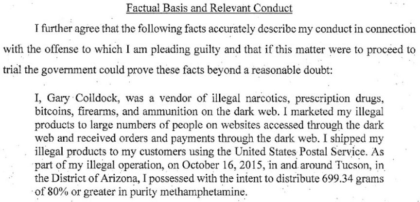
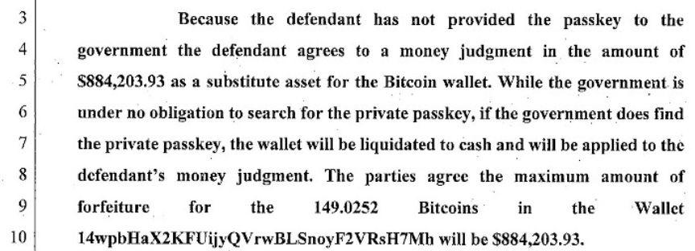

Tucson Man Sentenced for Darkweb Drug Trafficking
~2 min read | Published on 2019-10-05, tagged Darkweb-Vendor, Drug-Bust, Drugs, Sentenced using 453 words.
A dark web drug vendor from Tucson, Arizona, is set to spend the next 10 years behind bars after pleading guilty to possession of methamphetamine with the intent to distribute. The vendor reportedly operated from a trailer from 2013 to late 2015. He mailed drug packages to all parts of the united states and like other vendors, accepted payments in bitcoin.
Gary Steven Colldock, who used the pseudonym Dr. White on dark web markets, was initially arrested for shooting up his apartment in June 2013. Colldock told the police that he was shooting back at intruders. The police, however, did not recover any evidence that supported Colldock’s claims. Even though the bullets penetrated the walls of adjacent apartments, the shooting ended without any reported casualties. The police also searched Colldock’s apartment and found packaging and shipping materials, a ledger, and $10,000 hidden in a shoebox.
On being questioned, Colldock told the investigators that he was working for a roofing company and used the supplies found in his apartment to mail roofing materials’ samples. The incident led to a probation sentence. The case also triggered investigators’ interest in Colldock’s activities.
After intercepting multiple drug packages mailed by Colldock, the United States Postal Inspection Service and the Drug Enforcement Agency initiated investigations that included surveillance and undercover purchases. A postal service inspector who testified in one of Colldock’s hearings disclosed that while surveilling Colldock, secret agents witnessed him drop packages at a post office while on his way to a meeting with his probation officer. The agents then seized the packages and found out that they carried illicit drugs.
In attempts of uncovering Colldock’s vendor’s name on the dark web, investigators reportedly made undercover purchases and succeeded. In October 2015, having gathered enough evidence and probable cause, the investigators acquired and executed a search warrant against Colldock’s property. In his trailer, the agents found and seized 0ver 4,000 rounds of ammunition, four guns, packaging materials, drugs, 150 bitcoins, and cash. The investigators reportedly established that Colldock sent more than 50 drug packages in the period of two weeks of October 2015 before his arrest.
In Colldock’s sentencing hearing before U.S District Court Judge James Soto, the prosecution said he was a “prolific” and “meticulous” drug trafficker. The prosecution also disclosed that in the period between April and September 2015, investigators tied over 250 drug packages to Colldock. They also expressed the belief that the defendant may have sold drugs on Silk Road.
In addition to the 120 months prison sentence, Judge Soto ordered Colldock to pay $884,203.93. Colldock will also be placed under supervision for five years after his release. Proceedings for forfeiture of the 150 bitcoins seized during Colldock’s arrest are ongoing.
Gary Steven Colldock, who used the pseudonym Dr. White on dark web markets, was initially arrested for shooting up his apartment in June 2013. Colldock told the police that he was shooting back at intruders. The police, however, did not recover any evidence that supported Colldock’s claims. Even though the bullets penetrated the walls of adjacent apartments, the shooting ended without any reported casualties. The police also searched Colldock’s apartment and found packaging and shipping materials, a ledger, and $10,000 hidden in a shoebox.
Colldock's Statement of Facts in the Guilty Plea
On being questioned, Colldock told the investigators that he was working for a roofing company and used the supplies found in his apartment to mail roofing materials’ samples. The incident led to a probation sentence. The case also triggered investigators’ interest in Colldock’s activities.
After intercepting multiple drug packages mailed by Colldock, the United States Postal Inspection Service and the Drug Enforcement Agency initiated investigations that included surveillance and undercover purchases. A postal service inspector who testified in one of Colldock’s hearings disclosed that while surveilling Colldock, secret agents witnessed him drop packages at a post office while on his way to a meeting with his probation officer. The agents then seized the packages and found out that they carried illicit drugs.
Colldock's Forfeiture
In attempts of uncovering Colldock’s vendor’s name on the dark web, investigators reportedly made undercover purchases and succeeded. In October 2015, having gathered enough evidence and probable cause, the investigators acquired and executed a search warrant against Colldock’s property. In his trailer, the agents found and seized 0ver 4,000 rounds of ammunition, four guns, packaging materials, drugs, 150 bitcoins, and cash. The investigators reportedly established that Colldock sent more than 50 drug packages in the period of two weeks of October 2015 before his arrest.
In Colldock’s sentencing hearing before U.S District Court Judge James Soto, the prosecution said he was a “prolific” and “meticulous” drug trafficker. The prosecution also disclosed that in the period between April and September 2015, investigators tied over 250 drug packages to Colldock. They also expressed the belief that the defendant may have sold drugs on Silk Road.
In addition to the 120 months prison sentence, Judge Soto ordered Colldock to pay $884,203.93. Colldock will also be placed under supervision for five years after his release. Proceedings for forfeiture of the 150 bitcoins seized during Colldock’s arrest are ongoing.